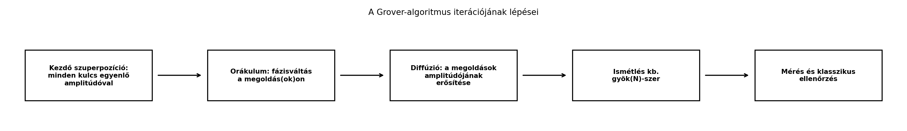

A Shor-algoritmus az előző alfejezetben bemutatott módon a nyilvános kulcsú kriptográfia alapjait rengeti meg, mert a faktorizációt és a diszkrét logaritmust polinomiális időre csökkenti. A szimmetrikus kriptográfia helyzete azonban alapvetően más: itt a támadó általában nem egy matematikai szerkezetet kihasználva keres, hanem a kulcsteret próbálja végig. Erre a klasszikus legjobb támadás az ellenőrzött kulcsok számát tekintve , ahol a bites kulcsok száma. A kvantumszámítás legismertebb általános célú keresőalgoritmusa, a Grover-algoritmus ezt csupán -re javítja. Ez négyzetgyökös (kvadratikus) gyorsítás: a munka -re csökken, ami jóval kisebb, mint a Shor-algoritmus szuperpolinomiális gyorsítása (ott a futási idő polinomiálissá válik): a kulcsméret duplázása visszaállítja az eredeti klasszikus biztonsági szintet. Ebben az alfejezetben megvizsgáljuk, hogyan működik ez a négyzetgyökös gyorsítás, miért nem felezi meg egyszerűen a biztonsági biteket a gyakorlatban, és milyen következményei vannak a szimmetrikus kulcs- és hash-méretekre.
A kérdés nem elméleti: az AES-128, a SHA-256 és a ChaCha20 ma szinte mindenhol jelen van, a TLS-kapcsolatoktól a lemeztitkosításon át a hardveres kulcstárolókig. Ha a kvantumszámítógépek egyszer elérik a szükséges méretet, a szimmetrikus rendszerek védelméhez is konkrét paraméterdöntéseket kell hoznunk – mégpedig jóval hamarabb, mint ahogy a technológia ténylegesen támadóképes lesz.
Képzeljünk el darab dobozt, amelyek közül pontosan egy tartalmazza a keresett kulcsot. Klasszikusan nem tehetünk mást, mint sorra kinyitjuk a dobozokat: legrosszabb esetben , várhatóan próbálkozás kell. A Grover-algoritmus ezt a folyamatot úgy gyorsítja, hogy a dobozok szuperpozícióját hozza létre, majd egy okosan megválasztott műveletsort – az orákulumot és a diffúziós operátort – iterálva fokozatosan felerősíti a helyes doboz amplitúdóját, a hibásakét pedig elnyomja. Körülbelül iteráció után a mérés nagy valószínűséggel a helyes dobozt adja vissza. A folyamatot az alábbi folyamatábra szemlélteti:

Ez a kép egyszerű, de fontos korlátot is mutat: az algoritmus minden iterációja magában foglalja az orákulum egy teljes kvantumos kiértékelését. Kulcskeresésnél ez azt jelenti, hogy egyetlen iteráció egy teljes AES-kiértékelést hajt végre szuperpozícióban, ami a gyakorlatban hatalmas kvantumáramkörmélységet és sok kaput igényel.
Definíció. Legyen egy orákulumfüggvény, amelyre akkor és csak akkor, ha a keresett elemek (megoldások) halmazába tartozik. Legyen a megoldások száma, és tegyük fel, hogy . A kvantumkeresési probléma az, hogy találjunk egy -et, amelyre , minél kevesebb orákulumhívással.
Algoritmus. A Grover-algoritmus lépései a következők:
Inicializáljuk az qubites regisztert a állapotba, majd alkalmazzuk a Hadamard-transzformációt minden qubitre:
Ismételjük a következő két lépést alkalommal:
Mérjük meg a regisztert a számítási bázisban, és kapjuk az jelöltet. Klasszikusan ellenőrizzük, hogy ; ha igen, sikerült a keresés.
Deriváció. A helyesség és a lekérdezésszám levezetéséhez használjuk a geometriai képet. Definiáljuk a nem-megoldások és a megoldások egyenletes szuperpozícióját:
A kezdeti állapot kifejezhető ebben a két ortonormált vektor által kifeszített síkban. Legyen az a szög, amelyre
Ekkor
Az orákulum a komponens előjelét változtatja meg, azaz tükrözi az állapotot a tengelyre. A diffúziós operátor pedig a irányra tükröz. Két tükrözés szorzata forgatás: a operátor hatása a síkban éppen egy szögű forgatás a irány felé.
Az alábbi ábra ezt , mellett mutatja: , . Az a -t a irányba tükrözi, a pedig a irányba; minden iteráció -val forgat tovább. A jobb oldali görbe azt is megmutatja, hogy a sikervalószínűség iteráció után a legnagyobb, utána újra csökken: több iteráció nem jobb.
Jelölje az állapotot iteráció után. A kezdeti állapot ; ebből
A mérés akkor ad nagy valószínűséggel megoldást, ha a komponens amplitúdójának abszolút értéke közel 1, azaz
vagyis . Ebből
Mivel , a szög kicsi, és . Így
Ha pontosan egy megoldás van (), akkor . Ezzel beláttuk a négyzetgyökös gyorsítást. ∎
Megjegyzés. Az algoritmus nem determinisztikus: a siker valószínűsége közel 1, de nem garantált. Ha a mérés nem ad megoldást, az algoritmus megismételhető, ami átlagosan konstans szorzót ad a lekérdezések számához.
A naiv összehasonlításban azt mondhatnánk: AES-128 esetén , így Groverrel lekérdezés kell, tehát a biztonsági szint 64 bitre csökken. Ez a számítás azonban figyelmen kívül hagy két gyakorlati tényezőt: a párhuzamosítás korlátait és a kvantumáramkörök mélységét.
Párhuzamosítás. Klasszikusan a kulcskeresés tökéletesen párhuzamosítható: processzor használatával a várható futási idő -re csökken, a teljes munka pedig marad. Grover-algoritmusnál más a helyzet. Ha kvantumgép mindegyike egy méretű résztéren futtat Grovert, a futási idő (iterációszám gépenként) , vagyis csak -szeres gyorsulás (klasszikusan -szeres), a teljes munka pedig
ami -szer több, mint egy gépen (). Az idő tehát nem -re csökken. Ennek szemléletes oka: a Grover-iterációk egymás után következnek, és a lépés nem osztható fel lineárisan a gépek között anélkül, hogy a teljes elvégzett munka ne nőjön. A gyakorlatban ez azt jelenti, hogy a kvantumos kulcskeresés párhuzamosítása sokkal kevésbé hatékony, mint a klasszikus változaté. (Az amplitúdóerősítés általános elméletét itt nem tárgyaljuk; a könyv későbbi kiadásaiban a haladó kvantumalgoritmusok részben visszatérhet rá.)
Áramkörmélység. Minden Grover-iteráció magában foglalja az orákulum egy teljes kvantumos kiértékelését. Az orákulum egy AES-kiértékelést hajt végre szuperpozícióban: a kulcsütemezés, a SubBytes, ShiftRows, MixColumns és AddRoundKey lépések mind kvantumkapukká alakítandók, és a teljes áramkörnek helyesen kell működnie minden lehetséges kulcs bemenetre. A jelenlegi becslések szerint egyetlen AES-128 kiértékelés kvantumáramköre nagyságrendileg milliós kapuszámú és mélységű (a pontos érték a technológiai optimalizációktól függ). Így a iterációhoz szükséges teljes mélység csillagászatilag nagy, és a hibajavítás is hatalmas overheadet ad hozzá. A gyakorlati támadási költség ezért jóval magasabb a naiv kvantumműveletnél.
Következmény. A “bites biztonság” fogalma a konkrét biztonság logikájához hasonlóan árnyaltabb, mint a nyers kulcshossz alapján gondolnánk. A gyakorlatban a Grover-támadás valódi költsége olyan tényezőktől függ, mint a rendelkezésre álló kvantummemória, a hibajavítás hatékonysága és a párhuzamosítás lehetősége. Ezért a biztonsági szinteket óvatosan kell kezelni.
Tegyük fel, hogy a fenti korlátokat figyelmen kívül hagyva pusztán a lekérdezések számát tekintjük. Ekkor:
Klasszikusan a 128 bites kulcs 128 bites biztonságnak felel meg. A Grover-féle négyzetgyökös gyorsítás elvileg ezt 64 bitesre csökkenti, ami nem elfogadható hosszú távú titkok esetén. Az AES-256 esetében a kvantumos kulcskeresés költsége marad, ami még a kvantumos világban is 128 bites biztonsági szintet ad. Ezért a posztkvantum ajánlásokban a szimmetrikus kulcsok méretét legalább 256 bitre érdemes növelni. Az AES-192 is elfogadható köztes választás lehet, de a gyakorlatban a 256 bites kulcs a legelterjedtebb biztonsági tartalék.
Fontos azonban hangsúlyozni, hogy a fenti összehasonlítás nem jelenti azt, hogy az AES-128 a kvantumos fenyegetés miatt azonnal használhatatlanná válna. A jelenlegi és a belátható jövőben épülő kvantumgépek messze nem képesek Grover-iterációt végrehajtani, és az egy iterációhoz szükséges áramkörmélység sem megoldott. A hosszú távú titkok (pl. kormányzati dokumentumok, orvosi adatok) esetén azonban a konzervatív tervezés az AES-256-ot részesíti előnyben.
A Grover-algoritmus nemcsak kulcskeresésre, hanem hash-függvények elleni támadásokra is használható. Klasszikusan egy bites hash-függvény ütközését a születésnapi paradoxon alapján körülbelül kiértékeléssel találhatunk. A kvantumos világban ismert a Brassard–Høyer–Tapp (BHT) algoritmus, amely kvantum lekérdezést és klasszikus memóriát igényel az ütközéskereséshez. Ez elvileg javulás a klasszikus -hez képest, de két fontos korláttal:
Hatalmas memóriaigény. A BHT-algoritmusnak egy bejegyzéses klasszikus táblázatot kell tárolnia, egy bejegyzés legalább bit. Például SHA-256 esetén , így bejegyzés kb. bit, azaz kb. bájt memóriát igényel, ami fizikailag megvalósíthatatlan. A gyakorlatban a rendelkezésre álló memória nagyságrendekkel kisebb, így a BHT gyorsítása nem realizálható.
A bonyolultsági konstansok. A BHT-algoritmus bonyolultsága modellfüggő; a pontos konstansok és a kvantum/klasszikus lekérdezések közötti átváltás a hibatűréstől és a memóriaelérési költségektől függ. Emiatt a gyakorlati biztonsági szint nem csökken pontosan -ra.
A hash-méretekre vonatkozó gyakorlati következmény: a SHA-256 továbbra is széles körben használható, de új, hosszú távú rendszerekben a SHA-384 vagy SHA-512 választása ésszerű tartalékot nyújt. A NIST posztkvantum szabványai is gyakran használnak SHA-256-ot, de a biztonsági kategóriákhoz igazodva nagyobb hash-kimeneteket is kínálnak.
A NIST a posztkvantum kriptográfiai szabványosítási folyamatában öt biztonsági kategóriát definiált, amelyek közül a leggyakrabban a következő három szint jelenik meg:
A gyakorlatban a posztkvantum algoritmusok paraméterkészleteit ezekhez a kategóriákhoz igazítják. Például az ML-KEM az 1., 3. és 5., az ML-DSA a 2., 3. és 5., az SLH-DSA az 1., 3. és 5. kategóriát célozza (FIPS 203/204/205, ellenőrzendő).
Továbbvitt eredmény. A NIST 1., 3. és 5. biztonsági kategóriái adják meg a posztkvantum algoritmusok paraméterválasztásának referenciapontját. Ezt használjuk az ML-KEM (Kyber) alfejezetben a Kyber-512/768/1024 paraméterkészletek, az ML-DSA (Dilithium) és a Falcon alfejezetben a 2., 3. és 5. kategóriájú ML-DSA-44/65/87 (Dilithium-2/3/5) paraméterei, valamint a Hash-alapú aláírások: Lamport, Merkle, XMSS, SLH-DSA alfejezetben a SLH-DSA paraméterei kapcsán.
A gyakorlati posztkvantum migráció során a figyelem nagy része a nyilvános kulcsú rendszerek cseréjére irányul, mert ott a Shor-algoritmus katasztrofális törést okoz. A szimmetrikus réteg esetében a helyzet sokkal kedvezőbb: a Grover-algoritmus csupán négyzetgyökös gyorsítást ad. Ennek következménye, hogy a kulcsméret duplázásával az eredeti klasszikus biztonsági szint visszanyerhető. Például:
A modern protokollok ezt gyakran már ma is támogatják. A TLS 1.3 például alapból tartalmazza az AES-256-GCM és a ChaCha20-Poly1305 titkosító csomagokat, és a legtöbb kliens és szerver implementáció képes ezeket használni. A teljesítménycsökkenés mérsékelt: az AES-256 tipikusan 20–30%-kal lassabb, mint az AES-128, ami a legtöbb alkalmazásban elfogadható. A szoftverfrissítések és a kulcshosszak növelése tehát alacsony költségű, ezért a szimmetrikus réteg posztkvantum felkészítése gyakran egy egyszerű konfigurációs feladat: a rendszerekben a 128 bites kulcsokat 256 bitesre cserélik, a hash-eket pedig nagyobb kimenetűre.
Ezzel szemben a nyilvános kulcsú rendszerek cseréje sokkal bonyolultabb: az RSA, ECDH, ECDSA kulcsok és protokollok cseréje új algoritmusok bevezetését, tanúsítványok újrakiadását és a teljes infrastruktúra frissítését igényli. Ezért a “gyűjtsd most, fejtsd vissza később” fenyegetés elleni védekezésben a szimmetrikus duplázás a gyors és olcsó első lépés, míg a nyilvános kulcsú migráció a hosszabb távú projekt.
Azt hinni, hogy Grover egyszerűen felezi a biztonsági biteket. A naiv érték figyelmen kívül hagyja a párhuzamosítás rossz skálázását és az áramkörmélység miatti hatalmas gyakorlati költséget. A valós támadási munka jóval magasabb lehet, de a pontos számítás technológiafüggő.
A BHT-algoritmus -ját valós fenyegetésként kezelni a hash-ekre anélkül, hogy a memóriaigényt figyelembe vennénk. A gyakorlatban a szükséges klasszikus memória megvalósíthatatlan, így a hash-ek biztonsági szintje nem csökken a kvantumvilágban ilyen drámaian.
A NIST kategóriák közötti különbség figyelmen kívül hagyása a protokolltervezésnél. Ha egy rendszer csak az 1. kategóriájú paramétereket támogatja, hosszú távú titkok esetén nem elég biztonságos; a kategóriák közötti választás a védendő adat élettartamától és a fenyegetési modelltől függ.
A szimmetrikus kulcs duplázásának elmulasztása, miközben a nyilvános kulcsú rendszert már cserélik. A posztkvantum migráció során a fókusz könnyen a nyilvános kulcsra terelődik, de a szimmetrikus réteg frissítése egyszerű és fontos lépés.
Azonnali kvantumfenyegetést feltételezni. A mai kvantumgépek messze a szükséges mérettől vannak, de a hosszú távú adatoknál a “gyűjtsd most, fejtsd vissza később” miatt már most érdemes konzervatív paramétereket választani.
1. feladat (A). Legyen a keresési tér mérete . Hány orákulumhívást igényel a klasszikus kimerítő keresés várhatóan, és hányat a Grover-algoritmus? Add meg mindkét értéket hatványalakban és közelítő decimális formában.
2. feladat (A). Sorold fel a NIST posztkvantum biztonsági kategóriákat (1, 2, 3, 4, 5), és nevezd meg mindegyikhez a referencia-primitívet (AES vagy SHA).
3. feladat (B). Tegyük fel, hogy egy támadó klasszikus processzort, illetve kvantumgépet tud használni AES-128 kulcskeresésre. Hasonlítsd össze a várható futási időt (csak a lekérdezések számát tekintve, a konstansokat elhanyagolva) a klasszikus és a kvantumos esetben. Használd a klasszikus és a kvantum futásiidő-, valamint a teljesmunka-közelítést.
4. feladat (B). Egy bites hash-függvény esetén mennyi a klasszikus születésnapi támadás és a BHT-algoritmus lekérdezésszáma? Mennyi memóriát igényel a BHT? Fejezd ki a memóriaigényt bitekben, és kommentáld a megvalósíthatóságot.
5. feladat (C). Vezesd le a Grover-algoritmus iterációinak számát a geometriai kép alapján. Indulj ki a összefüggésből, és igazold, hogy iteráció elegendő.
6. feladat (D). Tervezz egy posztkvantum migrációs tervet egy vállalati rendszerhez, amely jelenleg AES-128-CBC-t és SHA-256-ot használ. Milyen szimmetrikus kulcs- és hash-paramétereket javasolsz, és miért? Mely NIST biztonsági kategóriát céloznád meg, ha az adatokat 20 évig kell védeni? Indokold a választásodat.
Önellenőrzés – válaszok
1. feladat megoldása.
Klasszikusan:
hívás. Groverrel:
hívás (a
konstansszorozó elhanyagolva). A klasszikus érték
,
a kvantumos
.
2. feladat megoldása.
1: AES-128; 2: SHA-256; 3: AES-192; 4: SHA-384; 5: AES-256.
3. feladat megoldása.
Klasszikusan
.
Klasszikus idő:
(mivel
).
Kvantumos futási idő:
;
teljes kvantummunka:
.
Klasszikus futási idő
,
klasszikus teljes munka
.
A futási idők összevetése:
és
;
a teljes munkáké:
és
.
A párhuzamosítás miatt a teljes kvantummunka magasabb, mint a naiv
.
4. feladat megoldása.
Klasszikus születésnapi támadás:
kiértékelés. BHT:
kvantum lekérdezés. A BHT
bejegyzést tárol, egyenként legalább 256 bit (32 bájt) méretben, így a
memória kb.
bájt
bájt (Python-nal ellenőrizve: 2**85.33*32
),
messze meghaladja a Földön tárolható adatmennyiséget. Ezért a BHT
gyakorlatilag kivitelezhetetlen.
5. feladat megoldása.
A levezetés a fenti Deriváció részben található; a
kulcslépések: a kezdeti állapot felbontása
és
szerint, a forgatási szög azonosítása, a
iteráció utáni amplitúdó kifejezése, és a maximális siker feltételéből
.
Mivel
,
így
.
6. feladat megoldása.
Egy 20 éves védelmi időtáv konzervatív megközelítést igényel. Javasolt:
AES-256-GCM vagy AES-256-CBC helyett (a CBC-t érdemes hitelesített
titkosításra cserélni, pl. AES-256-GCM), valamint SHA-384 vagy SHA-512
használata a hash-ekhez. A célzott NIST biztonsági kategória az 5. szint
(AES-256-nak megfelelő), mert ez 128 bites kvantumos biztonságot ad. A
SHA-256 gyengébb lehet a BHT-támadás miatt, bár a memóriakorlátok miatt
a gyakorlatban még elfogadható, de hosszú távon a nagyobb hash-kimenet a
biztonságosabb.
A Grover-algoritmus egy általános kvantumkereső eljárás, amely egy elemű, megoldást tartalmazó térben orákulumhívással talál megoldást, szemben a klasszikus kereséssel. A levezetés a kétdimenziós geometriai képből adódik: az orákulum és a diffúziós operátor szorzata egy szögű forgatás, ahol , így körülbelül iteráció elegendő. A gyakorlati korlátok azonban enyhítik a fenyegetést: a párhuzamosítás teljes költsége , és az egy iterációhoz szükséges AES-áramkör mélysége óriási. Ezért az AES-128 kvantumos támadási költsége nem egyszerűen művelet. A NIST posztkvantum biztonsági kategóriái (1: AES-128, 2: SHA-256, 3: AES-192, 4: SHA-384, 5: AES-256) adják a paraméterválasztás referenciapontját. A szimmetrikus kulcsok duplázása (pl. AES-128 → AES-256) visszaállítja a klasszikus biztonsági szintet, így a legtöbb rendszerben ez a posztkvantum migráció egy olcsó és gyors lépése. Továbbvitt eredmények: a NIST 1., 3. és 5. kategóriáit használjuk az ML-KEM (Kyber), az ML-DSA (Dilithium) és a Falcon, valamint a Hash-alapú aláírások: Lamport, Merkle, XMSS, SLH-DSA alfejezetek paraméterválasztásában. A hash-ütközések BHT-algoritmusának bonyolultsága elméleti javulás, de a memóriaigény miatt gyakorlatilag nem megvalósítható.
A Grover-algoritmus bonyolultsága és geometriai levezetése stabil, széles körben ismert eredmény. A NIST biztonsági kategóriák a posztkvantum szabványosítási folyamat nyilvános dokumentumaiból származnak; a pontos definíciók a NIST hivatalos közleményeiben ellenőrizhetők. A párhuzamosítási és áramkörmélységi becslések technológiafüggők, időben változhatnak, ezért az itt megadott nagyságrendek (pl. az AES-áramkör milliós kapuszáma) konzervatív közelítések, és friss kutatásokkal pontosítandók. A BHT-algoritmus bonyolultsági konstansai és memóriaigénye modellfüggő; a gyakorlati korlátokra vonatkozó következtetések a jelenlegi ismeretek szerint stabilak.